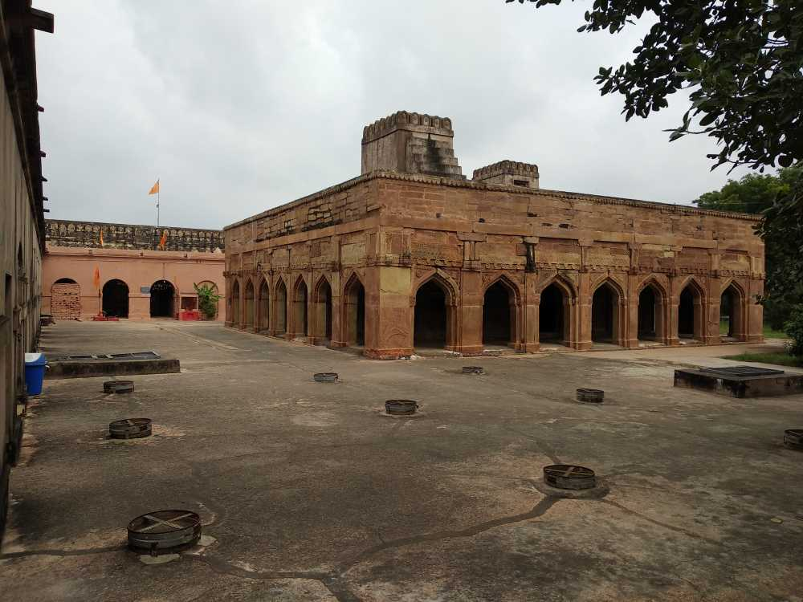
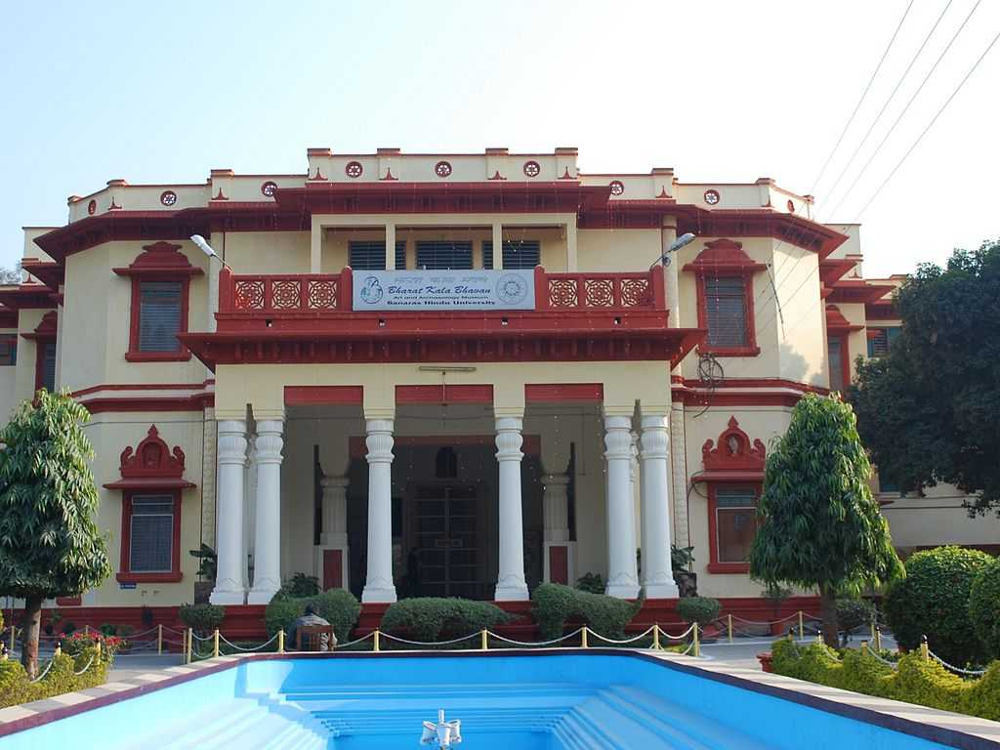
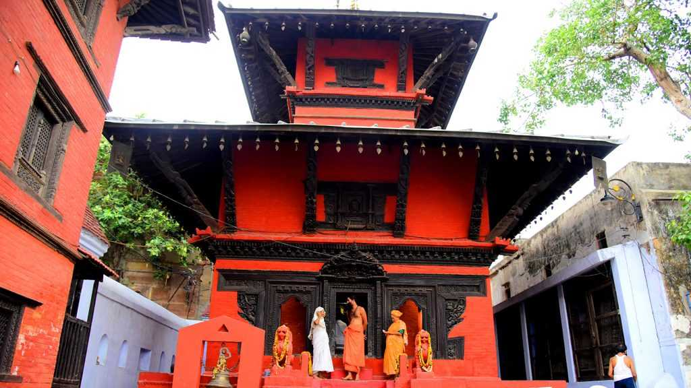
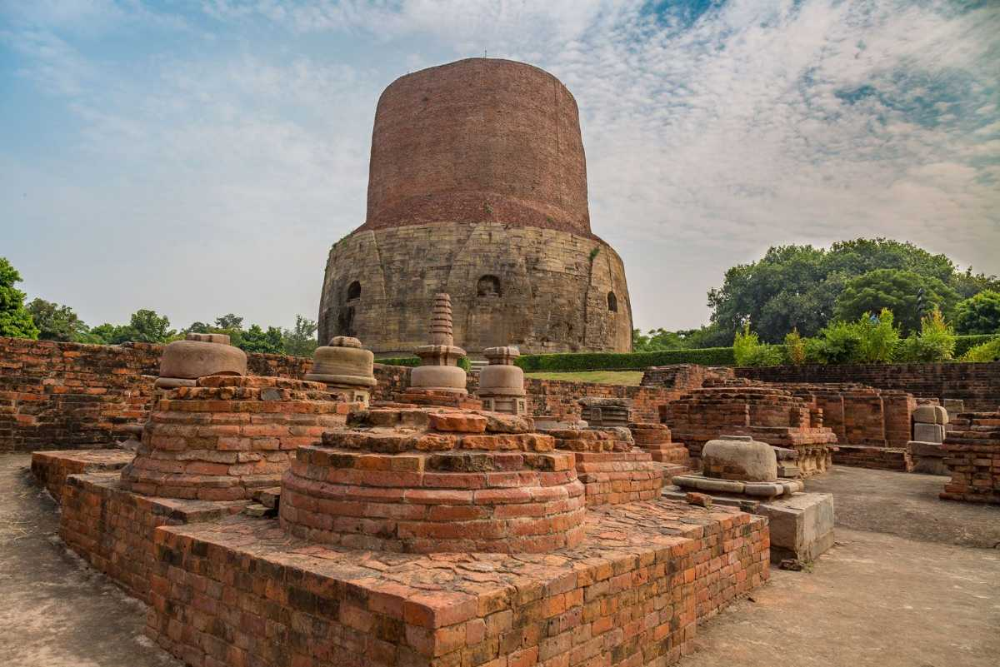
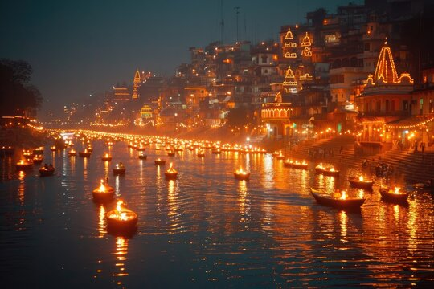
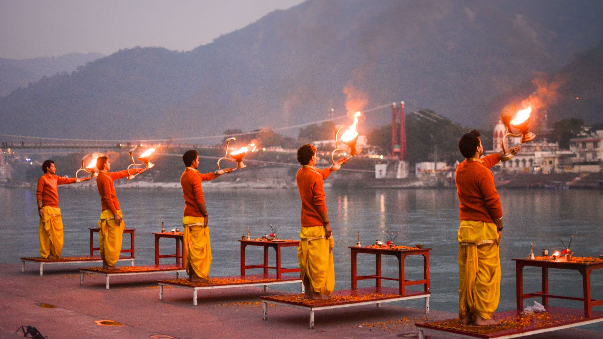
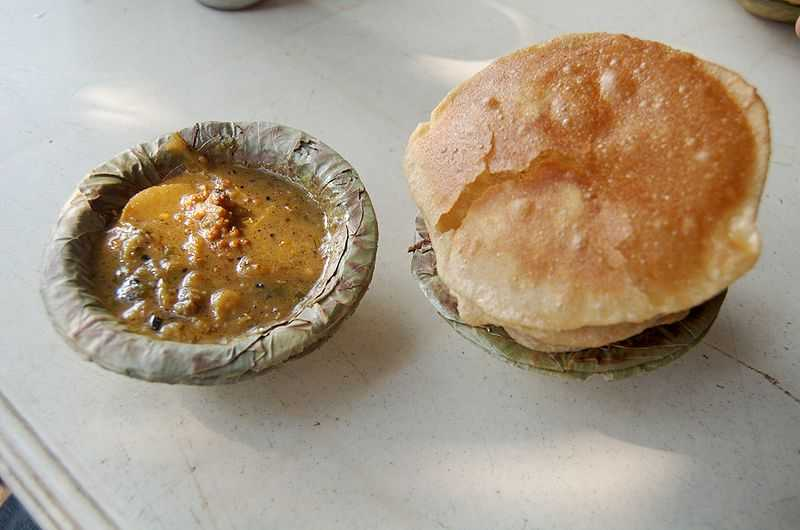
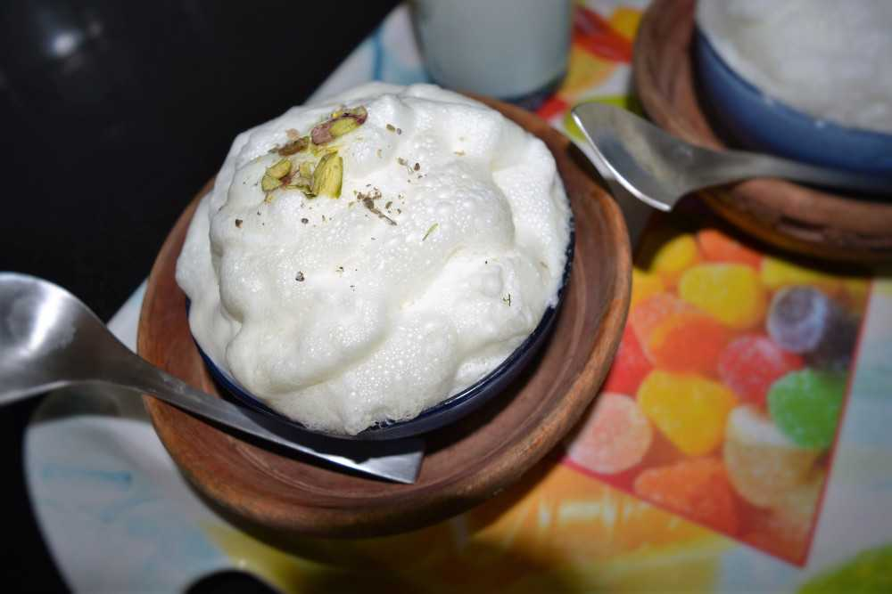

Varanasi, also known as Kashi or Benares, is one of the oldest continuously inhabited cities in the world and holds deep spiritual, cultural, and historical significance in India. Located on the banks of the sacred River Ganga in Uttar Pradesh, it is revered as the spiritual capital of the country and is believed to have been founded by Lord Shiva. Mentioned in ancient texts like the Rigveda, Varanasi has been a center of learning, philosophy, and devotion for over 3,000 years. It played a crucial role in the rise of Hinduism, Buddhism (with nearby Sarnath being the site of Buddha’s first sermon), and Jainism. Despite facing invasions and destruction during the medieval period, the city preserved its identity and witnessed a revival during the colonial era with the establishment of institutions like Banaras Hindu University. Today, Varanasi continues to enchant visitors with its vibrant ghats, ancient temples, spiritual rituals, and timeless charm, symbolizing the enduring soul of India.






The Ganga Aarti in Varanasi is a grand spiritual ritual performed every evening at Dashashwamedh Ghat, one of the city's most prominent riverfront steps. Conducted by a group of priests dressed in traditional attire, the ceremony involves synchronized chanting, ringing of bells, blowing of conch shells, and the waving of large brass lamps (deepams) in devotion to the River Ganga, which is worshipped as a goddess. This mesmerizing ritual attracts thousands of devotees and tourists daily and symbolizes the deep reverence that the people of Varanasi hold for the sacred river. The Aarti is especially spectacular during festivals like Dev Deepawali when the ghats are illuminated with thousands of oil lamps.
A spiritual evening ritual held on the banks of the Ganges, involving lamps, chants, and music.
Dashashwamedh Ghat, Varanasi
October to March; attend at sunset (around 6–7 PM) for the full experience.
One of the twelve Jyotirlingas and the most revered temple of Lord Shiva.
Vishwanath Gali, near the Ganga River, Varanasi
October to February; visit early morning (before 9 AM) to avoid heavy crowds.
A major Buddhist site where Lord Buddha gave his first sermon.
About 10 km from Varanasi city
November to February; mornings are ideal for exploring the site comfortably.
A historical fort with ties to various dynasties including the Mughals and British
Chunar, around 40 km from Varanasi
October to March; good weather for sightseeing and photography.

Kachori Sabzi is the most popular breakfast dish in Varanasi.
This street food is a Varanasi version of Maharashtrian Poha and Poha Chiwda of Bihar

Malaiyyo - Famous Sweet of Banaras
India’s Tourism, MI Road Delhi
📞 +91 141 2822863
📧 info@indiatourism.gov.in
🕘 Mon–Sat, 9:00AM–6:00PM